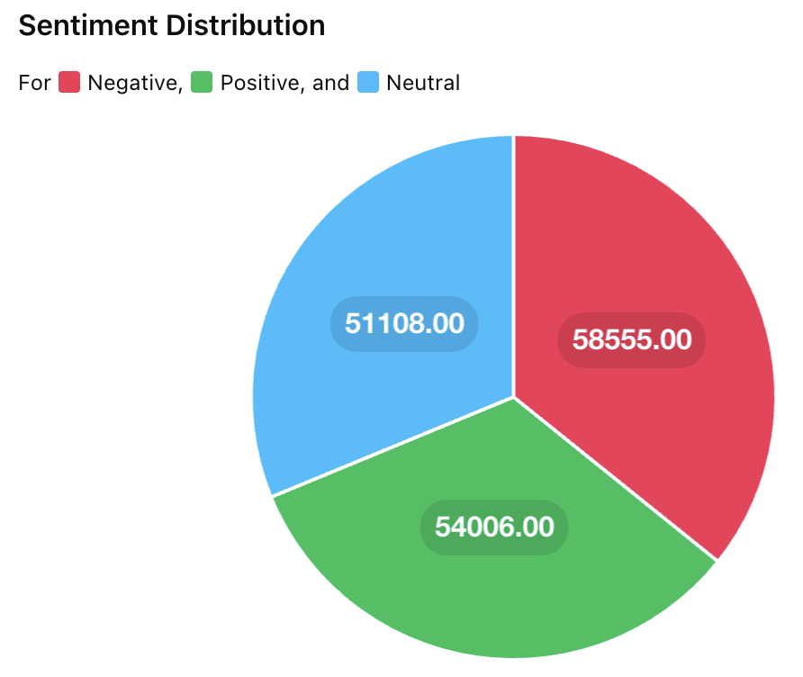

Here is a barchart that shows how tweets about climate change are more likely to harbor positive sentiments, as detected by LLM models in contrast to negative ones, whilst neutral scientific updates are even more likely

Here is the code we used to generate this visualisation

Additionally, negativity about climate change on social media is still a pressing issue! Whilst most tweets about climate change are optimistic or neutral, there is a growing concentration of negative terms being used. There are more positive/neutral tweets overall, however, when negative tweets are posted, they are more likely to use the same terms which means they are more likely to trend/be seen by others with the same POV creating a filter bubble

Most common words by sentiment
This can further be visualised with a pie chart, which shows that negative sentiment is not overrepresentedin social media, but instead neutral and positive tweets culmilatively outnumber it

This is further exhibited by the fact the most common words used in climate tweets do not have clear negative connotations
As we were unable to conduct primary analysis, we relied on the datasets found in this Kaggle
We selected this specific dataset as it received a high usability rating with kaggle giving its "Source/Provenance" a 100% quality rating. Additionally, it contained data on the sentiment of the posts, the favorite_count and retweet_count, as well as the date and coordinates of the posts which allowed for qualitative and quantitative data analysis